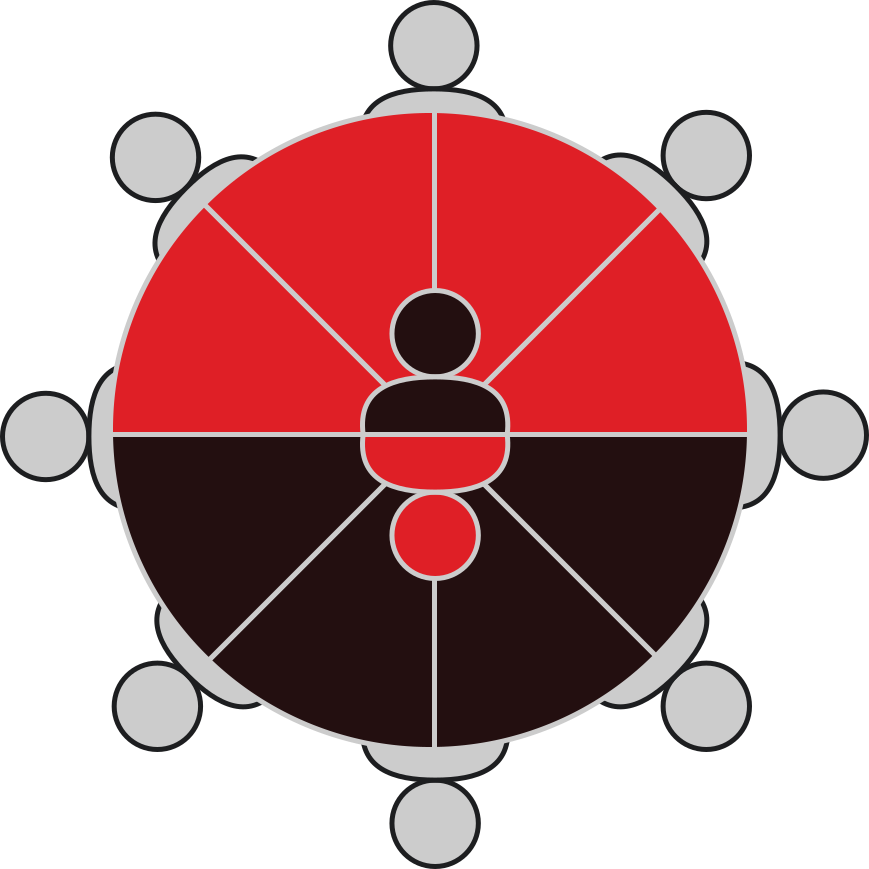
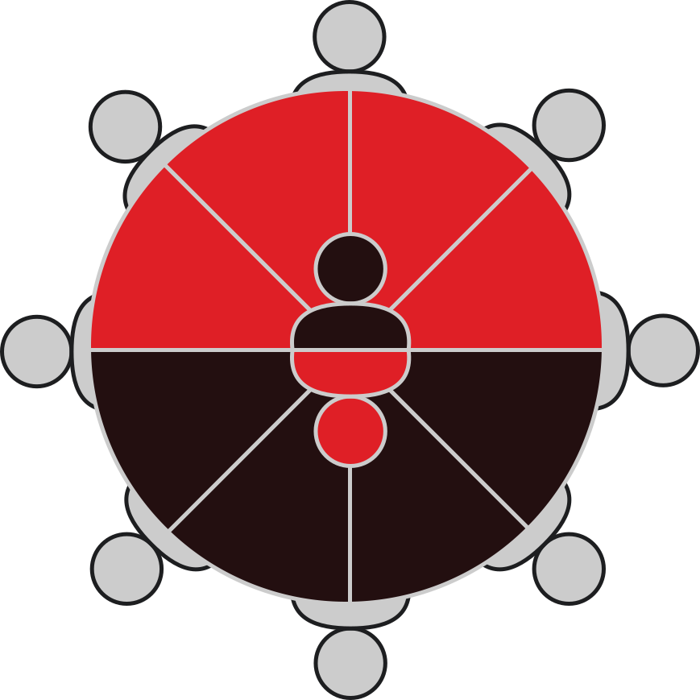

People 
People 
I need workers that may think without walls. That may choose everything impossible and make in real that they can’t imagine at start. My target is make some kind of culture and soul product. That isn’t thing without story or meaning. I want make products that can change that all already have been. I want to rewrite history with my team.
We need to build a lot of commands and I wish about usual sentence: - “You need to have so equal people in team, where they can eat over by 2 pizzas” In Russian it will call 2 pizzas like foolish guys. I think that it’s not a good idea, but there are really may be only 3 5 guys. Or another compilation 6 8 10.
Start will be from 2-3 people that really wonder to create something. I read a lot of history books and make a lot of my research about it. By complementation of people and I think that I know which people I need to ask and combine to make something crazy. I wish that my chance will be with me not during all my life before company but and in the moment and after all of this.
I wish to create team from different people, that will be really different in race color gender to make something great I think we need to combine any humans. Because we all different in mind and only similar to be in right. I want to make command from simple combinations of people whom will be interested. In start I have some test that I use before to find interesting people. These test really simple and really good describe you like personality. There are may be upgrade in future and I may start making money on writing AI to know about humans a lot. But I don’t want to predict in someone. I want to create something new and change world.
I wish that someone want to do it with me!